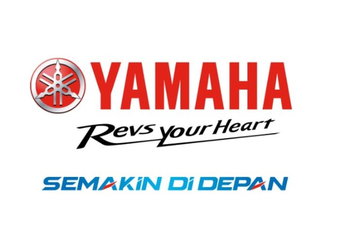

Yamaha Motor made its initial foray into India in 1985 as a joint-venture. In August 2001, it became a 100% subsidiary
of Yamaha Motor Co., Ltd, Japan (YMC). In 2008, Mitsui & Co. Ltd. entered into an agreement with YMC to become a
joint-investor in India Yamaha Motor Private Limited (IYM).
IYM's manufacturing facilities comprise of 2 State-of-the-art Plants at Surajpur (Uttar Pradesh) and Kanchipuram
(Tamil Nadu). The infrastructure at these plants supports production of two-wheelers and parts for the domestic as
well as overseas markets.
IYM is highly customer-driven and has a country-wide network of over 2,200 customer touch-points including 500+
dealers.
Presently, its product portfolio includes Sports models such as Blue-Core Technology enabled models such as Sports
model YZF-R15 version 4.0 (155 cc), FZS 250 CC, FZ 250 CC, MT-15 V 2.0 (Fuel-Injected 155cc), FZ-S FI (Fuel-Injected,
149 cc), FZ FI (Fuel-Injected, 149 cc), Fuel-injected 125cc Scooter Hybrid Range of Ray-ZR Street Rally 125 Fi (125 cc),
Ray-ZR 125 Fi (125 cc), Fascino 125 Fi (125 cc) and Aerox (155 cc)
Yamaha Motor India Pvt. Ltd. (YMI) is a 100% subsidiary of YMC and functions as the regional headquarters and
corporate control body of India business operations for YMC. YMI is responsible for Corporate Planning & Strategy,
Business Planning & Business Expansion and Quality & Compliance Assurance of Yamaha India Business.
Yamaha Motor India Sales Pvt. Ltd. (YMIS) is a 100% subsidiary of YMC and supports IYM to market and sell its
motorcycles & scooters in domestic as well as export markets.
Yamaha Motor Research & Development India Pvt. Ltd. (YMRI) is a 100% subsidiary of YMC and has been established
by YMC to provide R&D and Product development services to IYM for its domestic as well as export markets. YMRI
is the fifth overseas R&D headquarters for Yamaha Motor Group following Italy, Taiwan, China, and Thailand.